Создание игр в Roblox Studio
Язык программирования Lua. Начало работы со скриптами
Введение в четвертый модуль
Это занятие открывает первый из двух модулей, посвященных знакомству с программированием на языке Lua. В нём нам предстоит изучить основы написания скриптов в Roblox Studio.
Что такое программирование?
Программирование - это процесс создания компьютерных программ при помощи различных языков программирования. Они создаются для того, чтобы автоматизировать, ускорить и улучшить работу, которую производит человек.
Более того, благодаря техническому прогрессу, при помощи программ мы можем сделать вещи, которые человек не может выполнить физически. Например, функционирование робота: все, что он делает, выполняют заранее написанные программы.
Игровой движок
В создании игр у программистов тоже есть такой робот - это игровой движок, в нашем случае - это Roblox Studio. Игровой движок запускает все программы, написанные программистами. И благодаря этим программам игровой мир становится сложным и самостоятельным - он начинает действовать в соответствии с правилами, заранее установленными программистами, независимо от игрока.
Для того, чтобы написать такую программу внутри Roblox Studio, необходимо научиться писать скрипты. Язык LUA, на котором построен весь Roblox - это скриптовый язык. Это значит, что мы можем запустить неограниченное количество маленьких программ (скриптов), которые будут привязаны к разным объектам и будут выполнять разные функции одновременно.
Создание своего первого скрипта
В открытом проекте Roblox Studio создадим первый скрипт - для этого в окне Explorer наведем курсор на Workspace и в списке дочерних объектов создадим дочерний объект Script.
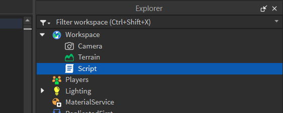Таким образом мы создадим скрипт, который будет работать со всеми объектами, находящимися в Workspace.
Откроем его. В появившемся окне увидим, что внутри скрипта уже есть написанные строки кода, это команда, которую по традиции пишут все программисты в своей первой программе. Чтобы стать настоящим программистом, нужно вручную написать и запустить команду, выводящую фразу "Hello World!" в консоль.
Удалим заранее написанный код и напишем его самостоятельно:
print("Hello world!")
Эта команда выведет любое сообщение, указанное в скобках, в консоль. Текст, который будет выводить функция print - это текстовые данные. Чтобы эти данные корректно прочлись при выполнении кода, необходимо поместить весь текст в кавычки. Если этого не сделать, слова Hello и World будут восприниматься как две отдельные переменные.
Любой текст в программном коде нужно помещать в кавычки, это правило универсально для любого языка программирования.
Чтобы увидеть, как работает наша программа, необходимо открыть консоль - перейти в меню View и найти кнопку Output:
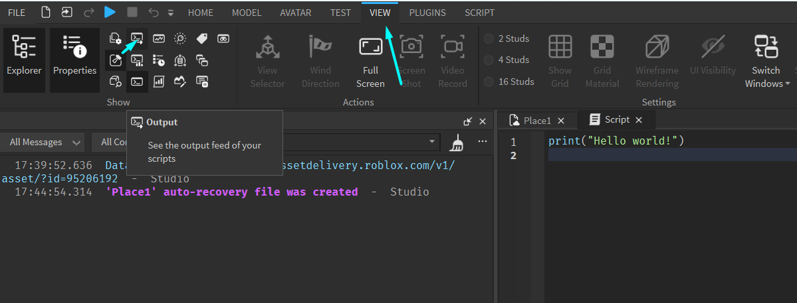Теперь всё готово к запуску программы! Любой скрипт начинает работать в момент запуска игры.
Нажмем на кнопку Play и обратим внимание на консоль: мы увидим выведенное сообщение Hello World. Теперь мы можем назвать себя программистами!
3. Практика создания скриптов. Простые скрипты для изменения свойств объектов
Задание 1 - меняем цвет стен. Как в скрипте указать объект
Чтобы выполнить первую задачу, нужно изменить цвет стены, преграждающей путь. Название стены - Part_Middle. Если цвет будет изменен верно, она автоматически откроется.
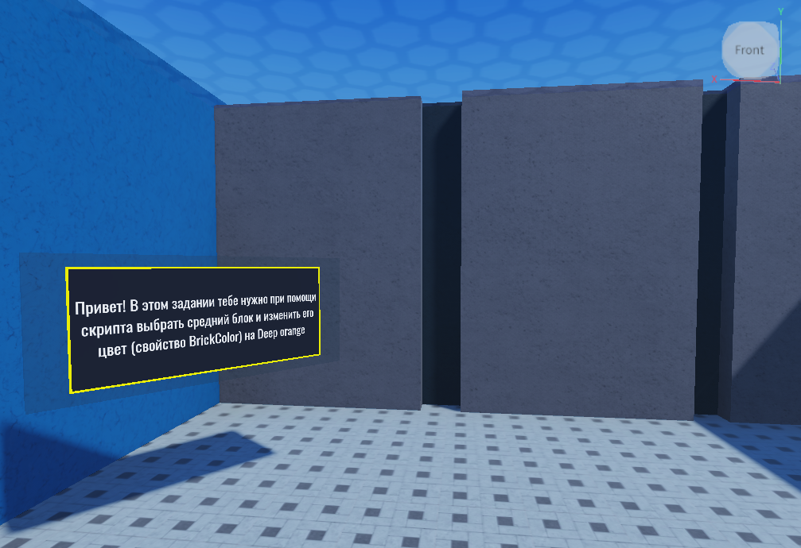Чтобы указать с помощью программного кода объект, с которым он будет работать, необходимо обратиться к нему при помощи родительско-дочерних отношений.
В первую очередь укажем самый главный объект сцены - workspace. Стена, цвет которой нужно поменять - дочерний объект workspace. Чтобы обратиться к ней, нужно поставить точку - универсальный соединительный элемент в большинстве языков программирования, он позволяет работать с дочерними объектами, событиями или свойствами указанного объекта.
Обратим внимание - до и после точки пробел не ставится. При помоши точки укажем искомый объект:
workspace.Part_Middle
Таким образом мы указали объект, с которым будем работать. Теперь нужно изменить его свойство BrickColor. Как было сказано выше, чтобы обратиться к свойству объекта, нужно также использовать точку. Допишем получившуюся конструкцию:
workspace.Part_Middle.BrickColor
Чтобы указать новое значение цвета двери, нужно присвоить этому свойству новое значение. К сожалению, в Roblox Studio цвет указывается довольно сложным образом, но эта конструкция будет встречаться довольно часто, поэтому со временем мы привыкнем к такому виду. Допишем программный код, в скобках необходимо указать нужный цвет:
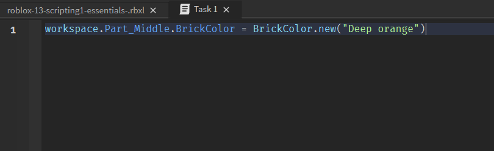Запустим игру и посмотрим на результат работы скрипта - цвет стены самостоятельно изменился.
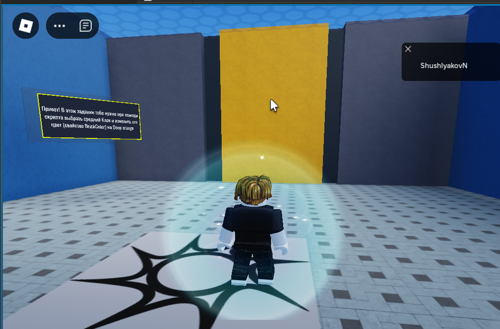Именно для этого создаются скрипты внутри игр - автоматизация процессов и действий, которые работают без участия игрока.
Задание 2 - проходим через дверь. Вводим понятие переменной
Второе задание закрепляет способы изменения параметров объектов. В нём необходимо сделать так, чтобы игрок смог пройти через дверь (название детали - Door). Для этого изменим значения параметров CanCollide, BrickColor и Transparency.
CanCollide - логический параметр, он может принимать значение true или false.
Необходимо найти этот параметр в свойствах двери - он отображается галочкой. Если галочка включена, значит параметр установлен в значение true, если выключена - false.
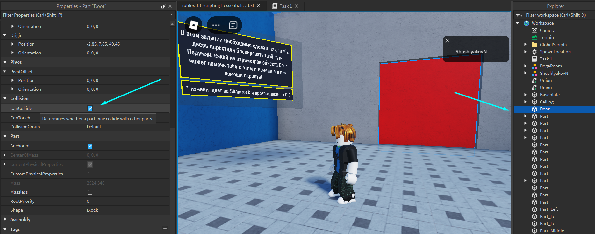Запишем первую часть кода:
workspace.Door.CanColide = false
Следующие параметры - BrickColor и Transparency. Как изменять цвет блоков мы уже знаем, поэтому узнаем, как изменить прозрачность. Transparency - числовой параметр, который записывается дробным числом от 0 до 1. Допишем программу следующим образом:
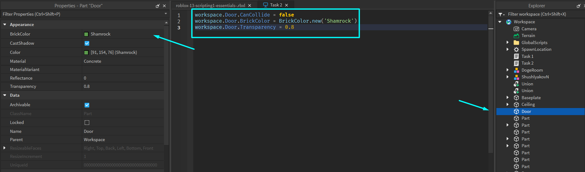Этот код можно сделать более читаемым при помощи использования переменных.
Переменная - это специальная часть программного кода, в которую можно «положить» любые значения, используемые в программе.
Более подробно переменные будут рассмотрены в следующих занятиях, поэтому сейчас нужно понять, что с их помощью мы можем сократить количество кода, которое необходимо писать.
Вместо того, чтобы каждый раз писать workspace.Door, можно создать переменную, которая будет называться door и сказать, что она равна фразе (ссылке) «workspace.Door»:
door = workspace.Door
Внутри переменной door находится ссылка на дверь. Теперь каждый раз, когда программа будет видеть эту переменную, она будет понимать, что ей нужно произвести какие-то действия с дверью.
Заменим все ссылки на дверь после создания переменной на саму переменную. Код стал более понятным и удобным для чтения.
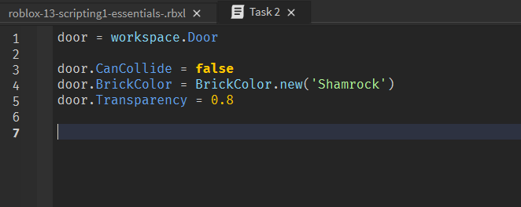Запустим игру и посмотрим на результат работы скрипта:
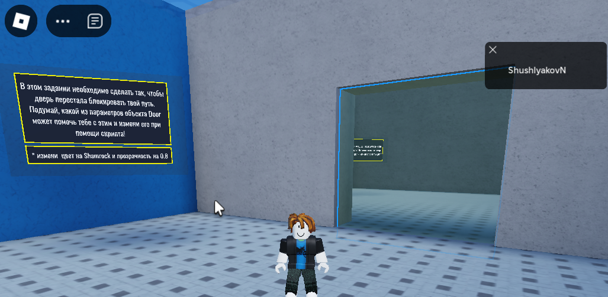Задание 3 - разворачиваем стену на 90 градусов. Векторные величины
В этом задании нужно познакомиться с изменением параметров трансформации, а именно Orientation. Стена, преграждающая путь, должна повернуться на 90 градусов по оси Y:
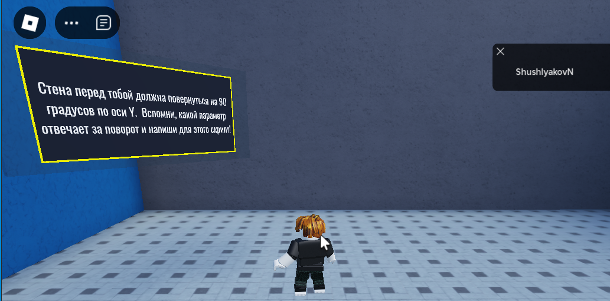Создадим новый скрипт и сделаем ссылку на стену с помощью переменной:
wall = workspace.RotatePart
Выберем стену и посмотрим на её параметр Orientation. Это свойство состоит из трех отдельных значений - поворотов по осям Х, У и Z. Такие типы данных называются векторными величинами - они должны быть определены сразу тремя значениями.
Векторные величины всегда состоят из трёх чётко определенных значений по каждому из заданных направлений.
Такие типы данных задаются схожим образом с параметром BrickColor. Допишем скрипт:
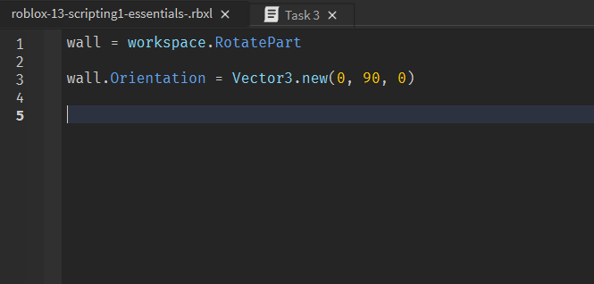Запустим игру и посмотрим на результат работы скрипта.
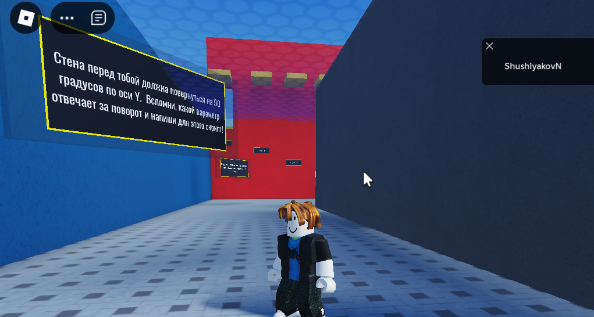Задание 4 - "секрет". Изменяем размеры объектов
Четвёртое задание «секретное» - для того, чтобы его найти, нужно отойти назад от открывшейся в третьем задании стены и пройти направо - мы увидим стену с заданием:
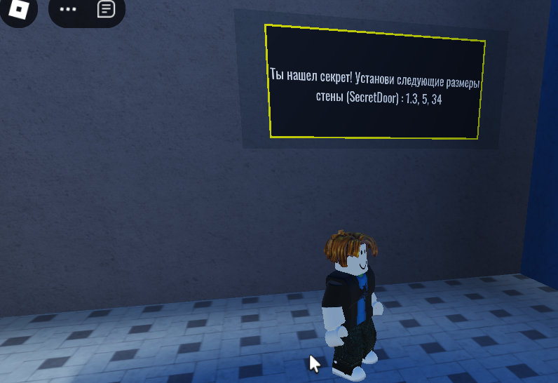Чтобы открыть секретную комнату, нужно изменить размеры секретной стены. Принцип работы этого скрипта такой же, как и у предыдущего, но с одним отличием - изменяться будет параметр Size. Это также векторный параметр и его значения задают размеры детали по каждому из измерений.
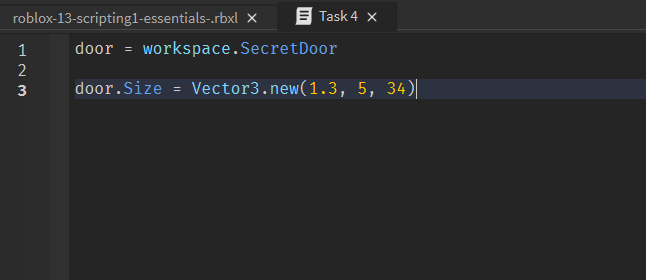Как только будет написан правильный скрипт, откроется комната с небольшой пасхалкой!
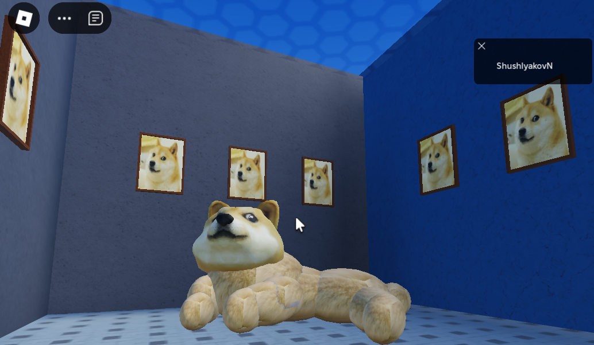Задание 5 - перемещаем объекты. Работа с координатами объектов
Последнее задание также работает с параметрами трансформаций, а именно - с параметром Position. В этом задании нужно последовательно переместить 5 ступенек, которые находятся на достаточно большой высоте. Каждая из них имеет соответствующее название: Step1, Step2 и т.д. Для каждой из них на специальной табличке указаны координаты, в которые их нужно переместить:
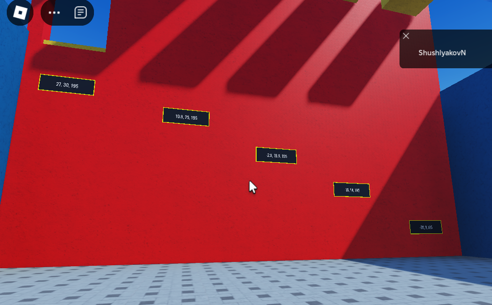Решение приведено ниже:
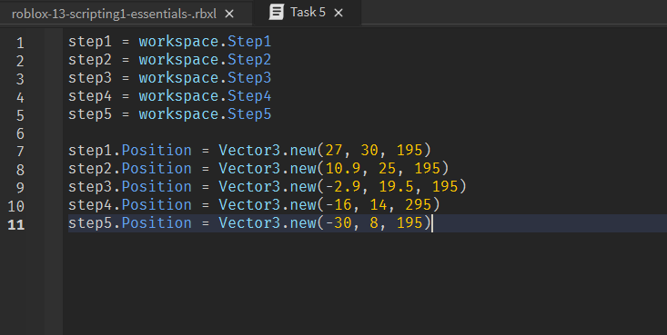Домашкаа 😁
Для закрепления теоретических знаний необходимо ответить на следующие вопросы:
-
Скрипт - это…
- Анимация игрового объекта
- Сценарий игры
- Программа, которая выполняет команды
- Все вышеперечисленное
-
В игре может быть только один скрипт, верно?
- Да
- Нет
-
Для чего в скриптах используется точка?
- Чтобы обратиться к дочерним объектам
- Чтобы изменить параметр выбранного объекта
- Чтобы создать событие
- Все вышеперечисленное
-
Как правильно написать команду изменения цвета детали?
- part.BrickColor = "Yellow"
- part.BrickColor = BrickColor.new "Yellow"
- part.BrickColor = BrickColor.new("Yellow")
- part.BrickColor = BrickColor.new("Yellow")
-
Vector3 - это тип данных, который…
- используется для описания положения, поворота и размера объектов
- работает с векторной графикой
- задает цвет объекта
- не используется в Roblox Studio
-
Как правильно изменить положение объекта?
- part.Position = Vector3(4,8,15)
- part.Position.Vector3 = Vector3(4,8,15)
- part.Position = Vector3.new("4,8,15")
- part.Position = Vector3.new(4,8,15)